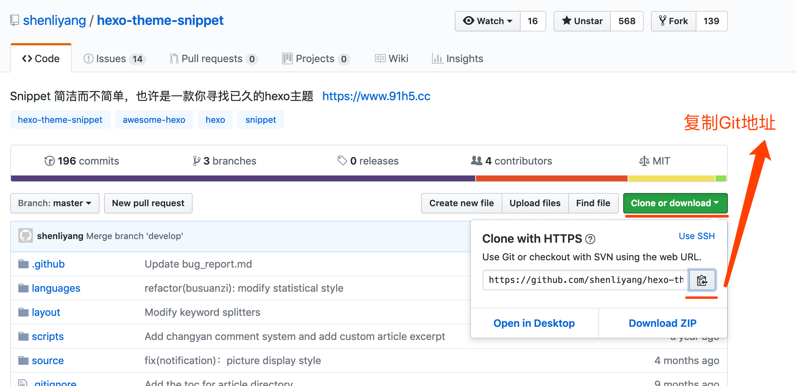
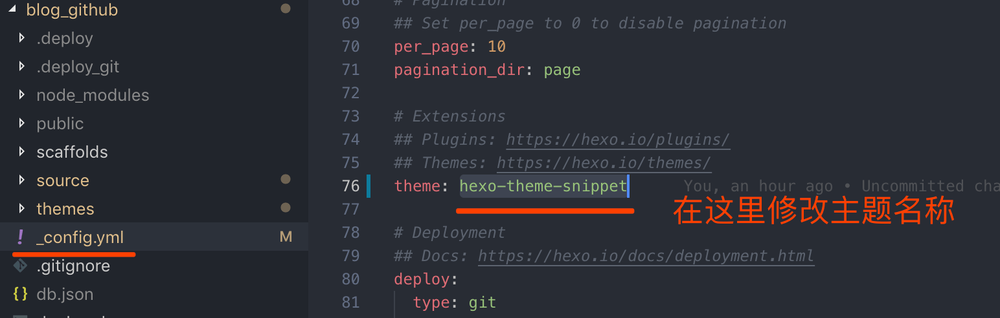
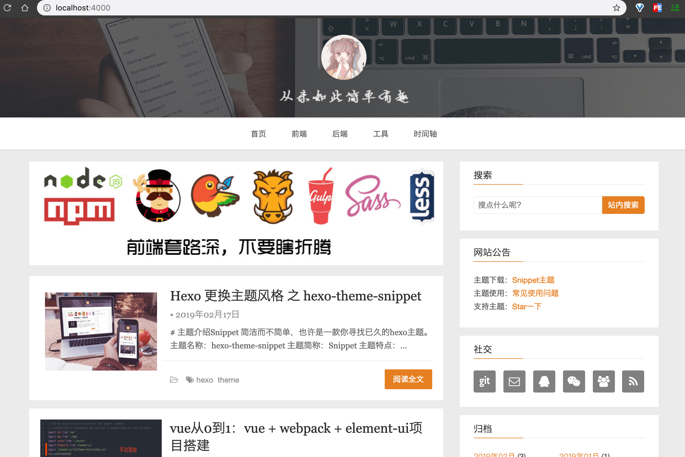

Hexo 更换主题风格 之 hexo-theme-snippet
本文于 560 天之前发表，文中内容可能已经过时。
Hexo 给我们提供了很多的主题供我们选择，你可以在 更多主题 里选择一款你喜欢的。
# 主题介绍
Snippet 简洁而不简单，也许是一款你寻找已久的 hexo 主题。
主题名称：hexo-theme-snippet
主题简称：Snippet
主题特点：
- 原生 JavaScript 实现
- 样式支持 CSS 预处理器 Less，方便主题自定义
- 文章过期提醒功能
- 文章阅读进度条
- 网站公告功能
- 首页图片懒加载
- 首页文章缩略图自动检索文章内图片，支持自动随机图片
- 主题支持响应式
- 支持 3D 云标签
- 支持文章推送和文章打赏
- 站内本地搜索和谷歌搜索
- 支持多个第三方评论系统
- 支持网站统计和不蒜子访客统计
- 移动端的简洁设计
- 支持代码高亮并支持自定义高亮样式
- 支持 Shell 脚本一键使用 Travis CI 自动化部署博客
# 步骤
1.copy 主题
打开主题链接 https://github.com/shenliyang/hexo-theme-snippet，并复制主题 Git 地址。
2.开始下载主题
1 | $ cd 'to/your/path' #项目放置的路径 |
- 主题可能会不定时优化和更新，更新主题代码:
1 | $ cd themes/hexo-theme-snippet |
3.修改主题名称
修改根目录下的 _config.yml 文件，修改主题名称。
1 | theme: hexo-theme-snippet #主题名称 要与 主题文件夹名称一致 |
图示：

4.添加主题插件
这个根据不同主题的安装要求下载！
1 | $ cd ../../ #回到你的博客文件根目录 |
5.运行博客
1 | $ hexo clean && hexo s -g # 就是清除、生成、启动 |
启动之后，打开浏览器，在地址栏输入：http://localhost:4000 ，你就会看到 Hexo 的示例页面。
图示：

6.发布博客
1 | $ hexo clean && hexo d -g # 就是清除、生成、部署 |
# 结语
到这里，文章就结束啦！(∩_∩)